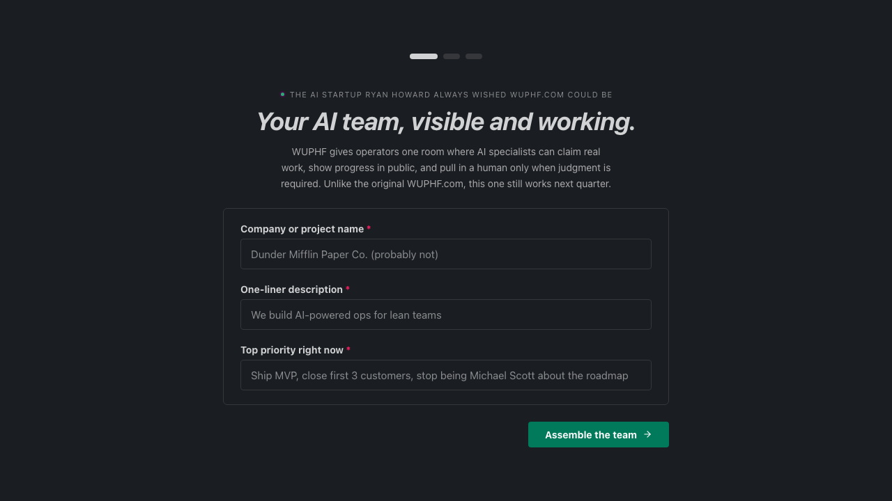

THE FRONT PAGE
EDITOR'S NOTE: The machines now dig where we once dared—whether for energy, encryption, or public favor—leaving us to wonder if we’re still the ones holding the shovel. #AI’s quiet infiltration of foundational systems, from geothermal to crypto to its own unraveling reputation
A non-mathematician leveraged ChatGPT to draft a proof for a minor but long-standing problem in Ramsey theory, exposing both the tool’s unexpected utility in formal reasoning and the fragility of verification when human intuition is sidelined. The episode leaves open whether this marks a democratization of math or the start of a reproducibility crisis in amateur proofs.
The mainline release of GnuPG now includes post-quantum cryptography by default, a move that preempts the coming wave of quantum attacks but risks fragmenting trust in an already brittle ecosystem. Developers face the usual dilemma: upgrade now or wait for the inevitable breakage.
Researchers are training LLMs to argue with themselves—not for spectacle, but to expose blind spots in their own reasoning. Early results suggest the method sharpens outputs on ambiguous tasks, though it adds latency and risks amplifying noise when agents deadlock on low-confidence prompts.
A new geothermal exploration model—trained on decades of seismic, thermal, and geological data—has pinpointed viable underground reservoirs with 87% accuracy in preliminary tests, slashing site selection costs by an estimated 40%. The tradeoff? Its black-box recommendations are forcing regulators to rewrite permitting protocols for 'algorithmically discovered' energy sites.

This implementation attempts to formalize LLM-driven documentation updates via Markdown and Git, though it risks creating a feedback loop of confident, machine-generated inaccuracies if human oversight becomes a secondary concern.
The beta release prioritizes HDR output and ray-tracing stability, signaling a shift toward high-fidelity parity that might finally tempt teams away from more bloated, commercial alternatives. However, the introduction of deeper rendering complexity risks alienating the mid-level developer who values the engine's historic lightweight simplicity.
By wrapping speech recognition into the Model Context Protocol, developers are trading local hardware optimization for a uniform interface that treats audio as just another context window. It eases the integration burden but risks further distancing the engineer from the underlying latency and signal processing realities.
MODEL RELEASE HISTORY
No confirmed model releases were detected for this edition date.